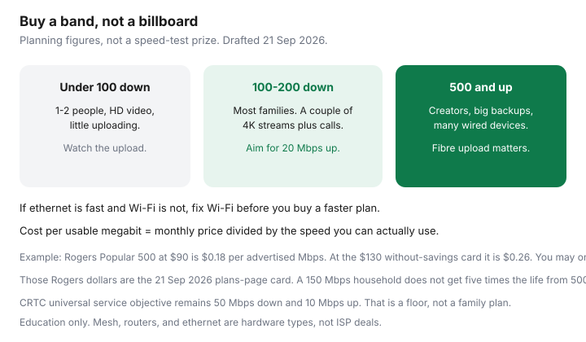

Internet · Canada
How Much Home Internet Speed Do You Actually Need in Canada? A Household Worksheet
Canadian ISPs sell download headlines. Households fail on upload and on Wi-Fi. A gigabit plan in a house where the gateway sits in a metal cabinet feels like a 40 Mbps plan, and the promo price makes the waste look smart until month 13. This worksheet starts from what the people in the home do at the same time, then asks what the address can deliver, then divides the post-promo price by the megabits you will actually use. It is not a speed-test leaderboard.
Disclosure: Mesh Wi-Fi systems, a Wi-Fi router, and ethernet cables are offer types when the ISP radio is the bottleneck. Saving Optimizer does not claim a live retailer partnership. Buying a faster tier from an ISP is not an affiliate deal, and we have no ISP partnership.
Key takeaways
- Add simultaneous uses. One 4K stream is on the order of 15–25 Mbps down. One high-definition video call is only a few megabits each way. Overlap is the bill, not the busiest app.
- Work-from-home comfort starts around 20 Mbps up if two calls can overlap. Symmetrical fibre is for people who upload large files, not for everyone who owns a laptop.
- Most households land in a 100–200 Mbps down band if Wi-Fi works. 500 Mbps and gigabit pay when the worksheet says so, or when the faster tier is the same price after a promo.
- Test ethernet before you upgrade the plan. If the wire is fast and the phone is not, spend on placement, ethernet, or mesh, not on Premier 2 Gig.
- Divide the after-promo monthly price by the speed you can use. Rogers’ 21 Sep 2026 Popular 500 card at $90 versus $130 is the same download at two prices. A household that only needs 150 Mbps should not pay either rate out of pride.
Download vs upload: WFH video, cloud backup, creators
Download is what you receive: video, web, game updates. Upload is what you send: your face on a call, photos to a cloud drive, a video you are delivering to a client. Plans love the first number. Jobs fail on the second.
| At the same time | Down allowance | Up allowance |
|---|---|---|
| One HD video call | 5 Mbps | 5 Mbps |
| Second HD call | 5 Mbps | 5 Mbps |
| One 4K stream | 25 Mbps | 3 Mbps |
| Second 4K stream | 25 Mbps | 3 Mbps |
| Cloud photo backup while someone works | 5 Mbps | 15 Mbps if you want it to finish |
| Online game (latency matters more) | 10 Mbps | 5 Mbps |
| Smart-home idle | 5 Mbps | 2 Mbps |
Two adults on calls, one 4K TV, and a backup is about 40 Mbps down and 27 Mbps up before you add a guest. Round up. A 100/20 or 150/30 cable tier can clear the download and still feel awful on the calls, because 20 Mbps up with a backup running is not 20 Mbps up for the camera. A 100/100 or 500/500 fibre tier is the fix when upload is the complaint. Creators sending multi-gigabyte files should stop reading download ads and price symmetrical tiers only. Everyone else should not copy them.
Concurrent streams, gaming, and smart-home headroom
Four people streaming HD, not 4K, can be under 40 Mbps down. The reason families buy 500 is headroom and bad Wi-Fi, not the arithmetic. Gaming adds little bandwidth and a lot of sensitivity to delay and to Wi-Fi retries. A mid-tier plan on ethernet beats a gigabit plan on a congested 2.4 GHz radio. Smart speakers and cameras are a trickle until a camera starts uploading continuously. Count the cameras if you have several recording to the cloud all evening. They belong in the upload column.
Headroom of about 30 percent on top of the simultaneous total is enough for a household that is not hosting a LAN party. If the worksheet says 80 down and 25 up, a 100–200 down plan with at least 30 up is the shopping target. A 1.5 Gbps plan is a different hobby.
Why Wi-Fi—not the plan—is often the bottleneck
Run two tests. First, a laptop on ethernet into the modem or hub, at a quiet hour and again around 8 p.m. Second, the same test on Wi-Fi in the room where people actually work. If ethernet shows most of the plan and Wi-Fi shows a fraction, you have a radio problem. Moving the gateway out of a cabinet, wiring one access point with ethernet, or adding a mesh node with a wired backhaul fixes more evenings than a speed-tier upgrade.
Rogers’ page on 21 Sep 2026 offered a $25/month step up to a newer Wi-Fi 7 modem and extenders. That can be the right purchase when the gateway is the limit, and it can be an expensive rental when a $0 move of the existing box would have done it. Bell includes a Giga Hub 2.0 on the Ontario cards we fetched the same day; extra pods are still a choice. Oxio includes one router and rents extras. TekSavvy will lend hardware on many plans and, on cable, often allows an approved modem plus your own router. The hardware types that match this section are a mesh system, a router, and ethernet cable. Buy them after the ethernet test, not before. Details on rental math: buy versus rent.

When 100–200 Mbps is enough vs when gigabit helps
- Enough at 100–200 down, with upload at or above your worksheet: one or two adults at home, a couple of streams, schoolwork, no one uploading video for a living.
- Step toward 500 when three or four heavy users overlap, game updates wreck your evenings, or the 200 tier’s upload is still under 20 Mbps and the 500 tier’s upload is not.
- Gigabit and above when you have wired desktops that can pass it, you move large files often, or the gigabit tier is the same monthly as a slower tier after credits. A single Wi-Fi laptop will not show you 1.5 Gbps. Bell’s own footnote on the 1.5 Gbps tier says a wired connection, and more than one connection, is how you approach the headline. TekSavvy prints a similar warning: one device’s ethernet port often tops out near 1 Gbps.
If two tiers are within a few dollars, buy the higher upload, not the higher download. If they are $30 apart and your worksheet fits in the cheaper one, keep the cheaper one and calendar the promo end.
Provincial availability reality: do not buy speed you cannot get
The CRTC’s universal service objective is still 50 Mbps down and 10 Mbps up. That is a policy floor for “can you participate,” documented on the Commission’s internet pages and on ISED’s High-speed Internet for All map. It is not a recommendation that a family of four buy a 50/10 plan. It is the number that tells you a rural quote at 10/1 is below the floor the country said it wanted, which is a build problem, not a loyalty problem.
Shop what the address qualifies:
- Ontario and Québec cities: Bell Pure Fibre beside Rogers or Videotron cable, plus TekSavvy, Oxio, or Fizz where they ride that plant. The fast product may be fibre even when cable advertises a bigger download.
- The West: Telus PureFibre beside Rogers cable, including former Shaw areas. Oxio’s Rogers-west tiers in an 11 Sep 2026 table went to 1.5 Gbps down and 200 Mbps up. Confirm upload before you call it fibre.
- Atlantic: Eastlink and Bell, plus TekSavvy where fibre or cable access exists. Oxio’s province list does not include the Atlantic provinces.
- Rural and the North: if the address tool tops out at slow fixed wireless, read Starlink versus funded fibre before you sign a two-year dish contract or a two-year cable term you cannot use. Do not pay urban gigabit prices for a tier the civic address will never provision.
Cost per usable Mbps after promo expiry
Usable means the lower of the plan and what your ethernet test can sustain in the evening, capped again by what the worksheet needs. There is no prize for unused megabits.
| Card | Monthly | $ per advertised Mbps | $ per Mbps if you only use 150 |
|---|---|---|---|
| Rogers Popular 500, offer, 21 Sep 2026 card | $90 | $0.18 | $0.60 |
| Same card without the time-limited saving | $130 | $0.26 | $0.87 |
| Bell Ontario 500/500 with mobility credit, 21 Sep 2026 | $80 | $0.16 | $0.53 |
| Oxio Ontario 100/100, Topicks 11 Sep 2026 | $52 | $0.52 on 100 down | You are using the tier you bought |
| TekSavvy Ontario Cable 100 after credit, same Topicks row | $74.95 | $0.75 | Re-shop before you accept this as permanent |
The Rogers 500 at $90 looks “cheaper per megabit” than Oxio 100 at $52. That ratio is a marketing leftover if your household needed 100. Fifty-two dollars for the speed you use beats ninety dollars for speed you do not, unless the Rogers upload or the winback changes the sheet. After the promo, $130 for the same unused headroom is worse. Run this division on the post-promo column every time. Then go back to Rogers versus Bell or the independent guides with the tier the worksheet picked.
Sources & date stamps
- CRTC internet pages and the universal service objective of 50 Mbps down and 10 Mbps up — policy floor, confirmed against crtc.gc.ca/eng/internet/ and ISED High-speed Internet for All (ised-isde.canada.ca). Read 21 Sep 2026.
- Bell.ca Internet and Mobility footnotes — 1.5 Gbps needs more than one connection to approach the headline; matched uploads on several Pure Fibre tiers. Fetched 21 Sep 2026.
- Rogers plans-page cards recorded 21 Sep 2026 — Popular 500 at $90 versus $130. Rogers.com/internet the same day — $25 Wi-Fi 7 modem upgrade.
- TekSavvy fibre footnotes — single-device ethernet often will not show multi-gigabit download. Read 21 Sep 2026.
- Topicks.ca 11 Sep 2026 — Oxio and TekSavvy Ontario 100 Mbps rows used in the cost-per-Mbps table.
- Planning allowances for 4K and video calls are household buffers (about 25 Mbps down per 4K stream, about 5 Mbps each way per HD call), not a vendor’s minimum. Streams vary by service.
Frequently asked questions
Is 50 Mbps down and 10 Mbps up enough?
It is the CRTC's universal service objective, a policy floor for basic access, not a comfortable target for two people on video calls. One high-definition call is only a few megabits, but the upload is tight once a second call or a cloud backup starts. Treat 50/10 as the minimum the country aimed at, then use the worksheet.
Do I need gigabit for a family of four?
Usually no. Two 4K streams and a video call fit in well under 200 Mbps down if Wi-Fi is doing its job. Gigabit helps when several people move large files, you upload video for work, or you are wired with equipment that can actually pass that rate. A gigabit plan on a single aging router will not feel like a gigabit.
Why is my speed test far below the plan?
Test on ethernet to the modem first. If the wire is close to the plan and Wi-Fi is not, the plan is not the problem. Distance, 2.4 GHz congestion, and a gateway in a cabinet are the usual causes. If the wire is also slow at 8 p.m., then it is the plant or the tier.
What upload should work-from-home have?
Plan on roughly 5 to 10 Mbps up per simultaneous high-definition call, plus room for cloud backup. Two overlapping calls want something like 20 Mbps up before you feel safe. Symmetrical 100 Mbps or more is for people who send large files often, not for email.
Should I buy the fastest plan at the address?
Buy the slowest tier that clears your worksheet, then compare 24-month cost after the promo. A faster tier you cannot light is a donation. If the address only offers a slow tier, no retail plan fixes that. Look at the rural guide before you pay for satellite out of frustration.